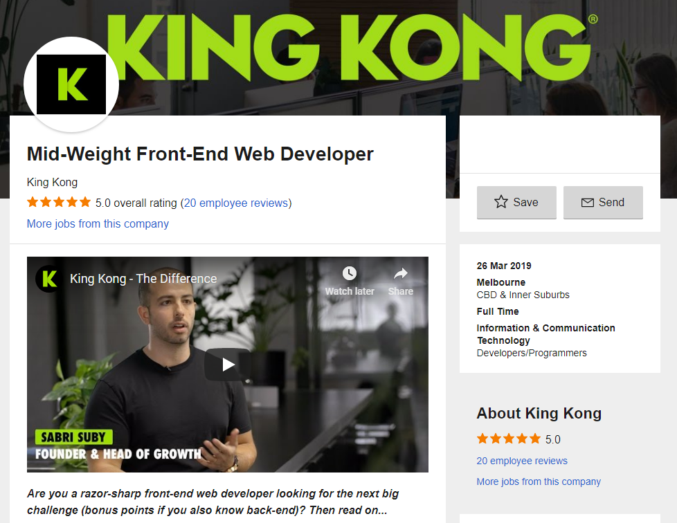

Ideal Job
 Link to listingDigital agency King Kong is looking for a Mid-Weight Front-End developer. This role is mainly focused on developing themes, translating designs into reality, communicating issues with account management and database management. This role is appealing to me because not only is it an opportunity to develop technical solutions, there is a great deal of creativity involved in it as well.
The job requires at least two years of experience with HTML5, CSS, PHP, Javascript & Wordpress. Along with that, familiarity with API’s and databases are necessary as well. In addition to technical skills, teamwork, problem solving and work ethic are a must as well.
My skillset at them moment however, is rather lacking. As of right now, I only have some familiarity with HTML and database management. That being said, I’ve only just begun my learning career, so there are many things I plan on doing to develop the necessary skill set. Aside from just completing my bachelor’s degree, taking various related elective courses will help, along with internships to gain real world experience and recognition. Interacting with RMIT’s IT clubs such as CSIT will also provide networking opportunities as well as insight into aspects of the IT industry not covered by the university’s courses.